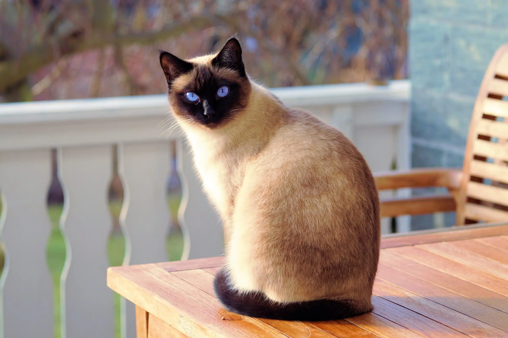

Persa
El gato Persa es conocido por su pelaje largo y su carácter tranquilo. Son gatos muy cariñosos y sociables.
- Origen: Persia
- Esperanza de vida: 12-17 años
- Peso: 3-5 kg
Siamés
El Siamés es conocido por su elegancia, sus ojos azules y su naturaleza comunicativa.
- Origen: Tailandia
- Esperanza de vida: 15-20 años
- Peso: 2.5-5.5 kg
Maine Coon
El Maine Coon es una de las razas más grandes, con un pelaje grueso y una naturaleza amigable.
- Origen: Estados Unidos
- Esperanza de vida: 10-13 años
- Peso: 5.9-8.2 kg
Bengalí
El Bengalí es famoso por su pelaje con patrones similares a los de un leopardo, y su energía incansable.
- Origen: Estados Unidos
- Esperanza de vida: 12-16 años
- Peso: 3.6-6.8 kg
Siberiano

El Siberiano es un gato grande y fuerte, conocido por su pelaje denso y su resistencia al frío.
- Origen: Rusia
- Esperanza de vida: 12-15 años
- Peso: 3.6-8.2 kg
Ragdoll

El Ragdoll es una raza conocida por su comportamiento relajado y su pelaje suave. Son muy dóciles y cariñosos.
- Origen: Estados Unidos
- Esperanza de vida: 12-17 años
- Peso: 4.5-9 kg
Esfinge
El Esfinge es un gato sin pelo, conocido por su apariencia única y su carácter afectuoso.
- Origen: Canadá
- Esperanza de vida: 8-14 años
- Peso: 3.5-7 kg
Birmano
El Birmano es un gato de tamaño mediano con ojos azules brillantes y un carácter amistoso.
- Origen: Birmania
- Esperanza de vida: 12-16 años
- Peso: 4-6 kg
British Shorthair

El British Shorthair es una raza robusta, conocida por su pelaje corto y denso y su temperamento equilibrado.
- Origen: Reino Unido
- Esperanza de vida: 12-20 años
- Peso: 3.2-7.7 kg
Exótico de Pelo Corto

El Exótico de Pelo Corto es similar al Persa, pero con un pelaje más corto. Es una raza tranquila y afectuosa.
- Origen: Estados Unidos
- Esperanza de vida: 12-15 años
- Peso: 3.5-6 kg
Abisinio
El Abisinio es una raza activa y curiosa, con un pelaje corto y un temperamento vivaz.
- Origen: Etiopía
- Esperanza de vida: 9-15 años
- Peso: 2.7-4.5 kg
Scottish Fold
El Scottish Fold es conocido por sus orejas dobladas hacia adelante, lo que le da una apariencia única.
- Origen: Escocia
- Esperanza de vida: 11-14 años
- Peso: 2.7-6 kg
Chartreux
El Chartreux es una raza francesa de gatos, conocida por su pelaje gris azulado y su comportamiento cariñoso.
- Origen: Francia
- Esperanza de vida: 12-15 años
- Peso: 3.5-7 kg